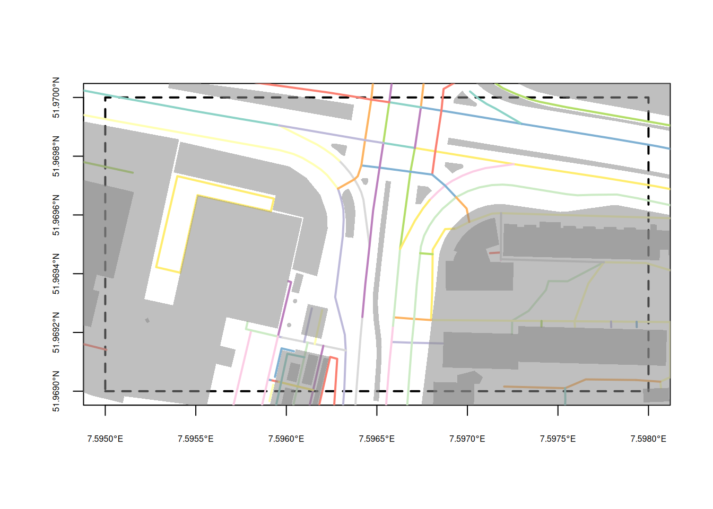
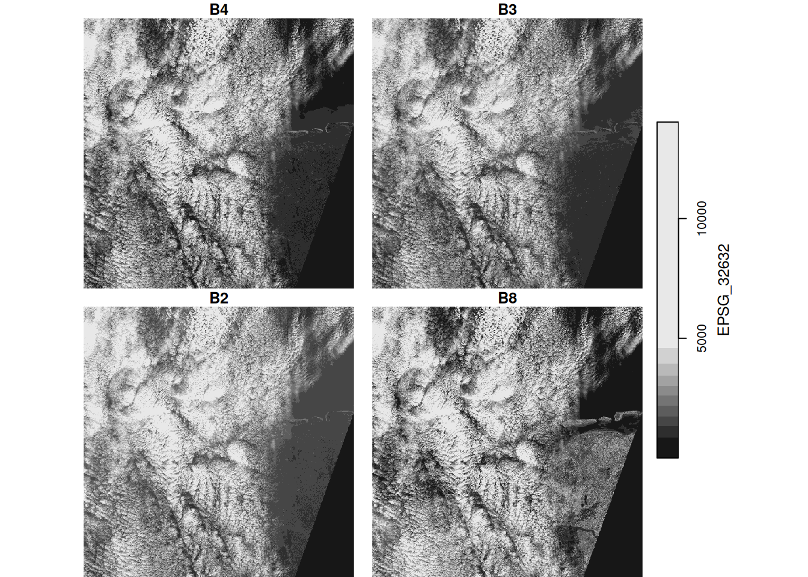

library(sf)
# Linking to GEOS 3.12.1, GDAL 3.8.4, PROJ 9.4.0; sf_use_s2() is TRUE
file <- system.file("gpkg/nc.gpkg", package = "sf")
c(xmin = -82,ymin = 36, xmax = -80, ymax = 37) |>
st_bbox() |> st_as_sfc() |> st_as_text() -> bb
read_sf(file, wkt_filter = bb) |> nrow() # out of 100
# [1] 169 Large data and cloud native
This chapter describes how large spatial and spatiotemporal datasets can be handled with R, with a focus on packages sf and stars. For practical use, we classify large datasets as too large
- to fit in working memory,
- to fit on the local hard drive, or
- to download to locally managed infrastructure (such as network attached storage)
These three categories may (today) correspond very roughly to Gigabyte-, Terabyte- and Petabyte-sized datasets. Besides size considerations, access and processing speed also play a role, in particular for larger datasets or interactive applications. Cloud native geospatial formats are formats optimised with processing on cloud infrastructure in mind, where costs of computing and storage need to be considered and optimised. Such costs can be reduced by
- using compression, such as the LERC (Limited Error Raster Compression) algorithm used for cloud-optimised GeoTIFF, or the BLOSC compressor used for ZARR array data
- fast access to spatial sub-regions, such as by ways of HTTP range request enabled for cloud-optimised geotiffs, or column-oriented data access in the GeoParquet and GeoArrow formats
- accessing/viewing data at incremental resolution (low-resolution images are available before or without the full resolution being read), implemented natively by progressive JPEG formats or by using image pyramids (or overviews) in other raster formats
- optimising data access with particular cloud storage or object storage protocols in mind.
It should be noted that there are no silver bullets in this area: optimising storage for one particular access pattern will lead to slow access for other ways. If raster data is for instance stored for optimal access of spatial regions at different spatial resolutions, reading the data as pixel time series may be very slow. Compression leads to low storage and bandwidth costs but to higher processing costs when reading, because of the decompression involved.
9.1 Vector data: sf
Reading from local disk
Function st_read reads vector data from disk, using GDAL, and then keeps the data read in working memory. In case the file is too large to be read in working memory, several options exist to read parts of the file. The first is to set argument wkt_filter with a WKT text string containing a geometry; only geometries from the target file that intersect with this geometry will be returned. An example is
Here, read_sf is used as an alternative to st_read to suppress output.
The second option is to use the query argument to st_read, which can be any query in “OGR SQL” dialect. This can for instance be used to select features from a layer, or limit fields. An example is:
Note that nc.gpkg is the layer name, which can be obtained from file using st_layers. Sequences of records can be read using LIMIT and OFFSET, to read records 51-60 use
Further query options include selection on geometry type or polygon area. When the dataset queried is a spatial database, then the query is passed on to the database and not interpreted by GDAL; this means that more powerful features will be available. Further information is found in the GDAL documentation under “OGR SQL dialect”.
Very large files or directories that are zipped can be read without the need to unzip them, using the /vsizip (for zip), /vsigzip (for gzip), or /vsitar (for tar files) prefix to files. This is followed by the path to the zip file, and then followed by the file inside this zip file. Reading files this way may come at some computational cost.
Reading from databases, dbplyr
Although GDAL has support for several spatial databases, and as mentioned above it passes on SQL in the query argument to the database, it is sometimes beneficial to directly read from and write to a spatial database using the DBI R database drivers for this. An example of this is:
pg <- DBI::dbConnect(
RPostgres::Postgres(),
host = Sys.getenv("DB_HOST"),
user = Sys.getenv("DB_USERNAME"),
dbname = "postgis")
read_sf(pg, query =
"select BIR74,wkb_geometry from nc limit 3") |> nrow()
# [1] 3where the database host and user name are obtained from environment variables, and the database name is postgis.
A spatial query might look like
Here, the intersection is carried out inside the database, and uses a spatial index when present. The same mechanism works when using dplyr with a database backend:
Spatial queries can be formulated and are passed on to the database:
nc_db |>
filter(ST_Intersects(wkb_geometry,
'SRID=4267;POINT (-81.50 36.43)')) |>
collect()
# # A tibble: 1 × 16
# ogc_fid area perimeter cnty_ cnty_id name fips fipsno cress_id
# <int> <dbl> <dbl> <dbl> <dbl> <chr> <chr> <dbl> <int>
# 1 1 0.114 1.44 1825 1825 Ashe 37009 37009 5
# # ℹ 7 more variables: bir74 <dbl>, sid74 <dbl>, nwbir74 <dbl>,
# # bir79 <dbl>, sid79 <dbl>, nwbir79 <dbl>,
# # wkb_geometry <pq_gmtry>
nc_db |> filter(ST_Area(wkb_geometry) > 0.1) |> head(3)
# # Source: SQL [?? x 16]
# # Database: postgres [postgres@localhost:5432/postgis]
# ogc_fid area perimeter cnty_ cnty_id name fips fipsno cress_id
# <int> <dbl> <dbl> <dbl> <dbl> <chr> <chr> <dbl> <int>
# 1 1 0.114 1.44 1825 1825 Ashe 37009 37009 5
# 2 3 0.143 1.63 1828 1828 Surry 37171 37171 86
# 3 5 0.153 2.21 1832 1832 North… 37131 37131 66
# # ℹ 7 more variables: bir74 <dbl>, sid74 <dbl>, nwbir74 <dbl>,
# # bir79 <dbl>, sid79 <dbl>, nwbir79 <dbl>,
# # wkb_geometry <pq_gmtry>(Note that PostGIS’ ST_Area computes the same area as the AREA field in nc, which is the meaningless value obtained by interpreting the coordinates as projected, where they are ellipsoidal.)
Reading from online resources or web services
GDAL drivers support reading from online resources, by prepending the URL starting with https:// with /vsicurl/. A number of similar drivers specialised for particular clouds include /vsis3/ for Amazon S3, /vsigs/ for Google Cloud Storage, /vsiaz/ for Azure, /vsioss/ for Alibaba Cloud, or /vsiswift/ for OpenStack Swift Object Storage. Section 9.3.2 has an example of using /vsicurl/.
These prepositions can be combined with /vsizip/ to read a file from a zipped online resource. Depending on the file format used, reading information this way may require reading the entire file, or reading it multiple times, and may not always be the most efficient way of handling resources. Cloud native formats are optimised to work efficiently using HTTP requests.
APIs, OpenStreetMap
Typical web services for geospatial data create data on the fly and give access to this through an API. As an example, data from OpenStreetMap can be bulk downloaded and read locally, for instance using the GDAL vector driver, but more typical a user wants to obtain a small subset of the data or use the data for a small query. Several R packages exist that query OpenStreetMap data:
- Package OpenStreetMap (Fellows and JMapViewer library by Jan Peter Stotz 2019) downloads data as raster tiles, typically used as backdrop or reference for plotting other features
- Package osmdata (Mark Padgham et al. 2017) downloads vector data as points, lines, or polygons in sf or sp format
- Package osmar (from CRAN archive) returns vector data, but in addition the network topology (as an
igraphobject) that contains how road elements are connected, and has functions for computing the shortest route
When provided with a correctly formulated API call in the URL the highly configurable GDAL OSM driver (in st_read) can read an “.osm” file (xml) and return a dataset with five layers: points that have significant tags, lines with non-area “way” features, multilinestrings with “relation” features, multipolygons with “relation” features , and other_relations. A simple and very small bounding box query to OpenStreetMap could look like
download.file(paste0("https://openstreetmap.org/api/0.6/map?",
"bbox=7.595,51.969,7.598,51.970"),
"data/ms.osm", method = "auto")and from this file we can read the layer lines, and plot its first attribute by
o <- read_sf("data/ms.osm", "lines")
p <- read_sf("data/ms.osm", "multipolygons")
st_bbox(c(xmin = 7.595, ymin = 51.969,
xmax = 7.598, ymax = 51.970), crs = 'OGC:CRS84') |>
st_as_sfc() |>
plot(axes = TRUE, lwd = 2, lty = 2, cex.axis = .5)
plot(o[,1], lwd = 2, add = TRUE)
plot(st_geometry(p), border = NA, col = '#88888888', add = TRUE)

the result of which is shown in Figure 9.1. The overpass API provides a more generic and powerful query functionality to OpenStreetMap data.
GeoParquet and GeoArrow
Two formats dedicated to cloud native analysis are derived from the Apache projects Parquet and Arrow. Both provide column oriented storage of tabular data, meaning that the reading of a single field for many records is fast, compared to record oriented storage of most other databases. The Geo- extensions of both involve
- a way of storing a geometry column, either in a well-known binary or text form, or in a more efficient form where sub-geometries are indexed up front
- storage of a coordinate reference system.
At the time of writing this book, both formats are under active development, but drivers for reading or creating them are available in GDAL starting from version 3.5. Both formats allow for compressed storage. The difference is that (Geo)Parquet is more oriented towards persistent storage, where, (Geo)Arrow is more oriented to fast access and fast computation. Arrow can for instance be both an in-memory and an on-disk format.
9.2 Raster data: stars
A common challenge with raster datasets is not only that they come in large files (single Sentinel-2 tiles are around 1 GB), but that many of these files, potentially thousands or millions, are needed to address the area and time period of interest. In 2022, Copernicus, the program that runs all Sentinel satellites, published 160 TB of images per day. This means that a classic pattern in using R consisting of downloading data to local disc, loading the data in memory, and analysing it is not going to work.
Cloud-based Earth Observation processing platforms like Google Earth Engine (Gorelick et al. 2017), Sentinel Hub or openEO.cloud recognise this and let users work with datasets up to the petabyte range rather easily and with a great deal of interactivity. They share the following properties:
- computations are postponed as long as possible (lazy evaluation)
- only the data asked for by the user is being computed and returned, and nothing more
- storing intermediate results is avoided in favour of on-the-fly computations
- maps with useful results are generated and shown quickly to allow for interactive model development
This is similar to the dbplyr interface to databases and cloud-based analytics environments, but differs in the aspect of what we want to see quickly: rather than the first \(n\) records of a dbplyr lazy table, we want a quick overview of the results, in the form of a map covering the whole area, or part of it, but at screen resolution rather than native (observation) resolution.
If for instance we want to “see” results for the United States on a screen with 1000 \(\times\) 1000 pixels, we only need to compute results for this many pixels, which corresponds roughly to data on a grid with 3000 m \(\times\) 3000 m grid cells. For Sentinel-2 data with 10 m resolution, this means we can downsample with a factor 300, giving 3 km \(\times\) 3 km resolution. Processing, storage, and network requirements then drop a factor \(300^2 \approx 10^5\), compared to working on the native 10 m \(\times\) 10 m resolution. On the platforms mentioned, zooming in the map triggers further computations on a finer resolution and smaller extent.
A simple optimisation that follows these lines is how the plot method for stars objects works. In the case of plotting large rasters, it downsamples the array before it plots, drastically saving time. The degree of downsampling is derived from the plotting region size and the plotting resolution (pixel density). For vector devices, such as pdf, R sets plot resolution to 75 dpi, corresponding to 0.3 mm per pixel. Enlarging plots may reveal this, but replotting to an enlarged devices will create a plot at target density. For geom_stars the user has to specify the downsample rate, because the ggplot2 does not make the device size available to that function.
stars proxy objects
To handle datasets that are too large to fit in memory, stars provides stars_proxy objects. To demonstrate its use, we will use the starsdata package, an R data package with larger datasets (around 1 GB total). It can be installed by
options(timeout = 600) # or larger in case of slow network
install.packages("starsdata",
repos = "http://cran.uni-muenster.de/pebesma/", type = "source")We can “load” a Sentinel-2 image from it by
library(stars) |> suppressPackageStartupMessages()
f <- paste0("sentinel/S2A_MSIL1C_20180220T105051_N0206",
"_R051_T32ULE_20180221T134037.zip")
granule <- system.file(file = f, package = "starsdata")
file.size(granule)
# [1] 7.69e+08
base_name <- strsplit(basename(granule), ".zip")[[1]]
s2 <- paste0("SENTINEL2_L1C:/vsizip/", granule, "/", base_name,
".SAFE/MTD_MSIL1C.xml:10m:EPSG_32632")
(p <- read_stars(s2, proxy = TRUE))
# stars_proxy object with 1 attribute in 1 file(s):
# $EPSG_32632
# [1] "[...]/MTD_MSIL1C.xml:10m:EPSG_32632"
#
# dimension(s):
# from to offset delta refsys values x/y
# x 1 10980 3e+05 10 WGS 84 / UTM z... NULL [x]
# y 1 10980 6e+06 -10 WGS 84 / UTM z... NULL [y]
# band 1 4 NA NA NA B4,...,B8
object.size(p)
# 12568 bytesand we see that this does not actually load any of the pixel values but keeps the reference to the dataset and fills the dimensions table. (The convoluted s2 name is needed to point GDAL to the right file inside the .zip file containing 115 files in total).
The idea of a proxy object is that we can build expressions like
p2 <- p * 2but that the computations for this are postponed. Only when we really need the data, is p * 2 evaluated. We need data when we:
-
plotdata, - write an object to disk, with
write_stars, or - explicitly load an object in memory, with
st_as_stars
In case the entire object does not fit in memory, plot and write_stars choose different strategies to deal with this:
-
plotfetches only the pixels that can be seen by downsampling, rather than reading all pixels available -
write_starsreads, processes, and writes data chunk-by-chunk
Code
plot(p)
# downsample set to 18

Downsampling and chunking is implemented for spatially dense images, but not for dense time series or other dense dimensions. As an example, the output of plot(p), shown in Figure 9.2 only fetches the pixels that can be seen on the plot device, rather than the 10980 \(\times\) 10980 pixels available in each band. The downsampling ratio taken is
meaning that for every 19 \(\times\) 19 sub-image in the original image, only one pixel is read and plotted.
Operations on proxy objects
Several dedicated methods are available for stars_proxy objects:
methods(class = "stars_proxy")
# [1] [ [[<- [<- adrop
# [5] aggregate aperm as.data.frame c
# [9] coerce dim droplevels filter
# [13] hist image initialize is.na
# [17] Math merge mutate Ops
# [21] plot prcomp predict print
# [25] pull rename select show
# [29] slice slotsFromS3 split st_apply
# [33] st_as_sf st_as_stars st_crop st_dimensions<-
# [37] st_downsample st_mosaic st_normalize st_redimension
# [41] st_sample st_set_bbox transmute write_stars
# see '?methods' for accessing help and source codeWe have seen plot and print in action; dim reads out the dimension from the dimensions metadata table.
The three methods that actually fetch data are st_as_stars, plot and write_stars. st_as_stars reads the actual data into a stars object, its argument downsample controls the downsampling rate. plot does this too, choosing an appropriate downsample value from the device resolution, and plots the object. write_stars writes a stars_proxy object to disk.
All other methods for stars_proxy objects do not actually operate on the raster data but add the operations to a to do list attached to the object. Only when actual raster data are fetched, for instance when plot or st_as_stars are called, the commands in this list are executed.
st_crop limits the extent (area) of the raster that will be read. c combines stars_proxy objects, but still doesn’t read any data. adrop drops empty dimensions and aperm can change dimension order.
write_stars reads and processes its input chunk-wise; it has an argument chunk_size that lets users control the size of spatial chunks.
Remote raster resources
A format like “cloud-optimised GeoTIFF” (COG) has been specially designed to be efficient and resource-friendly in many cases, e.g., for only reading the metadata, or for only reading overviews (low-resolution versions of the full imagery) or spatial regions using the /vsixxx/ mechanisms (Section 9.1.3). COGs can also be created using the GeoTIFF driver of GDAL, and setting the right dataset creation options in a write_stars call.
9.3 Very large data cubes
At some stage, datasets need to be analysed that are so large that downloading them is no longer feasible; even when local storage would be sufficient, network bandwidth may become limiting. Examples are satellite image archives such as those from Landsat and Copernicus (Sentinel-x), or model computations such as the ERA5 (Hersbach et al. 2020), a model reanalysis of the global atmosphere, land surface, and ocean waves from 1950 onwards. In such cases it may be most helpful to gain access to virtual machines in a cloud that have these data available, or to use a system that lets the user carry out computations without having to worry about virtual machines and storage. Both options will be discussed.
Finding and processing assets
When working on a virtual machine on a cloud, a first task is usually to find the assets (files) to work on. It looks attractive to obtain a file listing, and then parse file names such as
S2A_MSIL1C_20180220T105051_N0206_R051_T32ULE_20180221T134037.zipfor their metadata including the date of acquisition and the code of the spatial tile covered. Obtaining such a file listing however is usually computationally very demanding, as is the processing of the result, when the number of tiles runs in the many millions.
A solution to this is to use a catalogue. The recently developed and increasingly deployed STAC, short for spatiotemporal asset catalogue, provides an API that can be used to query image collections by properties like bounding box, date, band, and cloud coverage. The R package rstac (Simoes, Carvalho, and Brazil Data Cube Team 2023) provides an R interface to create queries and manage the information returned.
Processing the resulting files may involve creating a data cube at a lower spatial and/or temporal resolution, from images that may span a range of coordinate reference systems (e.g., several UTM zones). An R package that creates a regular data cube from such a collection of images is gdalcubes (Appel 2023; Appel and Pebesma 2019), which can also directly use a STAC (Appel, Pebesma, and Mohr 2021) to identify images.
Cloud native storage: Zarr
Where COG provides cloud native storage for raster imagery, Zarr is a format for cloud native storage of large multi-dimensional arrays. It can be seen as a successor of NetCDF and seems to follow similar conventions, being used by the climate and forecast communities (Eaton et al. 2022). Zarr “files” are really directories with sub-directories containing compressed chunks of the data. The compression algorithm and the chunking strategy will have an effect on how fast particular sub-cubes can be read or written.
Function stars::read_mdim can read entire data cubes but has options for reading sub-cubes by specifying for each dimension offset, number of pixels, and the step size to read a dimension at a lower resolution (Pebesma 2022). Similarly, stars::write_mdim can write multi-dimensional arrays to Zarr or NetCDF files, or other formats that support the GDAL C++ multi-dimensional array API.
To read a remote (cloud-based) Zarr file, one needs to prepend the URL with indicators about the format and the access protocol:
dsn = paste0('ZARR:"/vsicurl/https://ncsa.osn.xsede.org',
'/Pangeo/pangeo-forge/gpcp-feedstock/gpcp.zarr"')after which we can read the first 10 time steps using
library(stars)
bounds = c(longitude = "lon_bounds", latitude = "lat_bounds")
(r = read_mdim(dsn, bounds = bounds, count = c(NA, NA, 10)))
# stars object with 3 dimensions and 1 attribute
# attribute(s):
# Min. 1st Qu. Median Mean 3rd Qu. Max.
# precip [mm/d] 0 0 0 2.25 1.6 109
# dimension(s):
# from to offset delta refsys x/y
# longitude 1 360 0 1 NA [x]
# latitude 1 180 -90 1 NA [y]
# time 1 10 1996-10-01 1 days Date
st_bbox(r)
# xmin ymin xmax ymax
# 0 -90 360 90In this example,
-
NAvalues forcountindicate to get all values available for that dimension - here,
boundsvariables needed explicit specification because the data source did not follow the more recent CF (1.10) conventions; and ignoring bounds would lead to a raster with a bounding box having latitude values outside \([-90,90]\).
APIs for data: GEE, openEO
Platforms that do not require the management and programming of virtual machines in the cloud but provide direct access to the imagery managed include GEE, openEO, and the climate data store.
Google Earth Engine (GEE) is a cloud platform that allows users to compute on large amounts of Earth Observation data as well as modelling products (Gorelick et al. 2017). It has powerful analysis capabilities, including most of the data cube operations explained in Section 6.3. It has an interface where scripts can be written in JavaScript, and a Python interface to the same functionality. The code of GEE is not open-source, and cannot be extended by arbitrary user-defined functions in languages like Python or R. R package rgee (Aybar 2022) provides an R client interface to GEE.
Cloud-based data cube processing platforms built entirely around open source software are emerging, several of which using the openEO API (Schramm et al. 2021). This API allows for user-defined functions (UDFs) written in Python or R that are being passed on through the API and executed at the pixel level, for instance to aggregate or reduce dimensions using custom reducers. UDFs in R represent the data chunk to be processed as a stars object; in Python xarray objects are used.
Other platforms include the Copernicus climate data store (Raoult et al. 2017) or atmosphere data store, which allow processing of atmospheric or climate data from ECMWF, including ERA5. An R package with an interface to both data stores is ecmwfr (Hufkens 2023).
9.4 Exercises
Use R to solve the following exercises.
- For the S2 image (above), find out in which order the bands are by using
st_get_dimension_values(), and try to find out which spectral bands / colours they correspond to. - Compute NDVI for the S2 image, using
st_applyand an appropriatendvifunction. Plot the result to screen, and then write the result to a GeoTIFF. Explain the difference in runtime between plotting and writing. - Plot an RGB composite of the S2 image, using the
rgbargument toplot(), and then by usingst_rgb()first. - Select five random points from the bounding box of
S2, and extract the band values at these points; convert the object returned to ansfobject. - For the 10-km radius circle around
POINT(390000 5940000), useaggregateto compute the mean pixel values of the S2 image when downsampling the images with factor 30, and on the original resolution. Compute the relative difference between the results. - Use
histto compute the histogram on the downsampled S2 image. Also do this for each of the bands. Useggplot2to compute a single plot with all four histograms. - Use
st_cropto crop the S2 image to the area covered by the 10-km circle. Plot the results. Explore the effect of setting argumentcrop = FALSE - With the downsampled image, compute the logical layer where all four bands have pixel values higher than 1000. Use a raster algebra expression on the four bands (use
splitfirst), or usest_applyfor this.